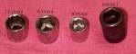
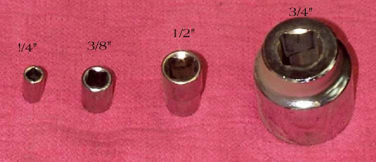
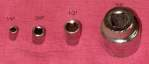
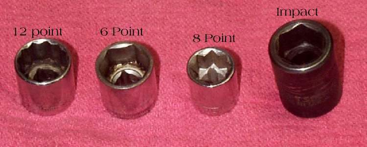
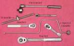

Most damaged bolts and nuts are damaged by the wrong tool or the wrong way of pulling. A good fit and a steady pull protect the fastener, which saves far more time than any trick for removing a ruined one.
Safety
- Pull the tool toward you where you can. A push that slips drives your hand into the bike.
- Keep the tool square on the fastener. A tilted tool grips only the corners.
- Support small or brittle parts so the force does not break them.
You need
- Combination spanners and 6-point sockets in the right sizes.
- Extensions and a ratchet or T-handle.
- An adjustable spanner, only as a last choice for odd sizes.
Steps
- Clean the fastener head. Dirt in a hex or cross recess stops the tool seating.
- Pick the size by trying it: the tool should slide on with almost no play. A tool that wobbles will round the corners.
- Prefer a 6-point socket. It grips the flat sides of a hex head firmly. A 12-point socket slides on more easily but holds the corners and rounds a tight fastener sooner.
- Prefer a socket or ring end over an open-end spanner for a tight bolt, because it surrounds the head. Use the open end for light work or tight space.
- Seat the socket fully on the head. Add an extension if needed, and keep the handle in line.
- Pull with a steady force. Do not jerk. For a very tight fastener, use a longer handle or an impact driver instead of a hammer on the spanner.
- If only an odd or damaged fastener has no fitting tool, use an adjustable spanner with the jaw closed tight on the flats and pulled so the fixed jaw takes the load.
- If the head starts to round, stop. Go to Remove a rounded, seized or broken fastener.
Check your work
- The fastener head still has sharp corners or a clean recess.
- On fitting, tighten to the value in your bike's manual: Use a torque wrench correctly.
If it did not fix the problem
- Head rounded or bolt broken: Remove a rounded, seized or broken fastener.
- Screw in an aluminium case will not turn: Loosen a tight screw with an impact driver.